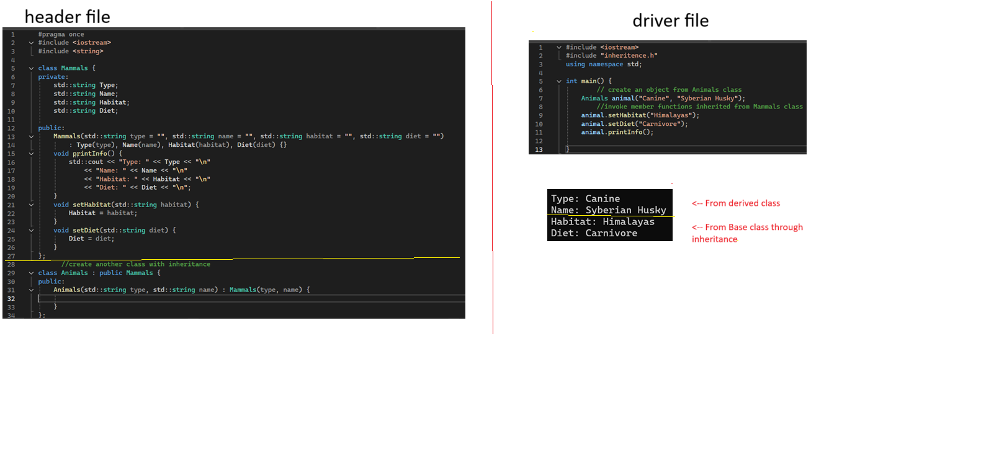
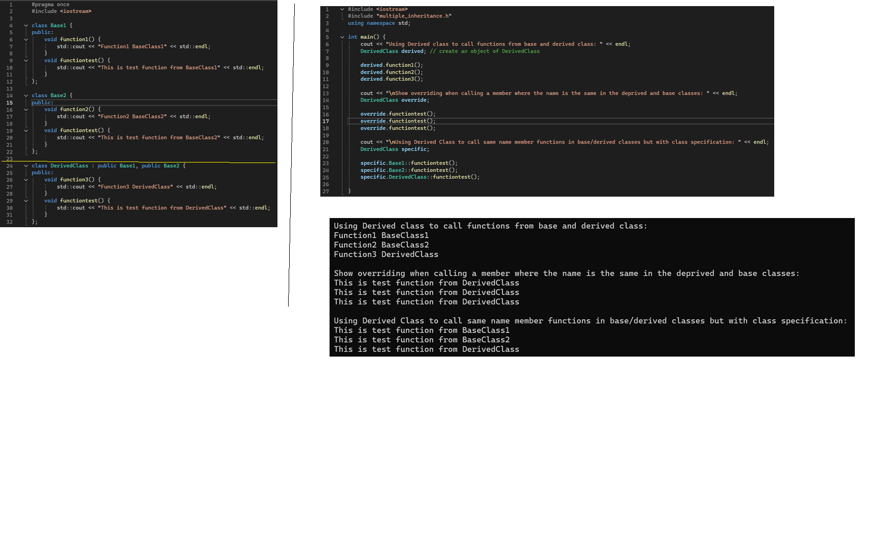
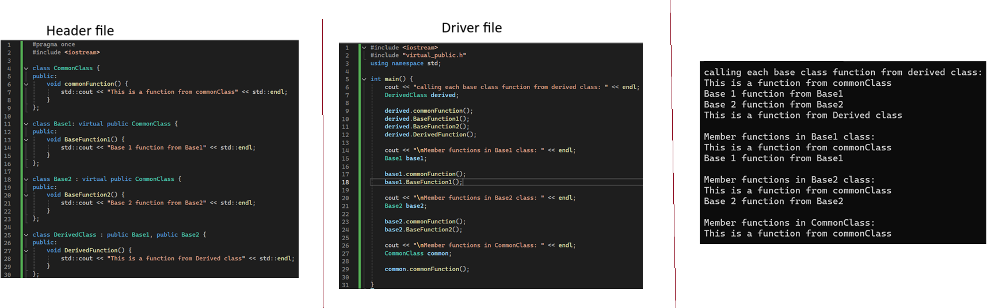
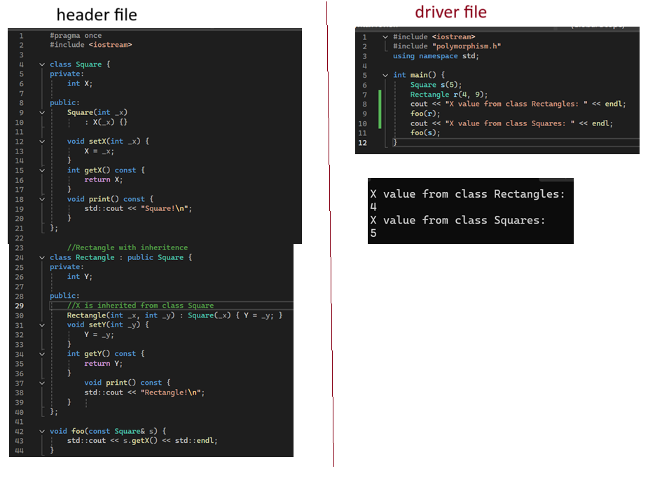
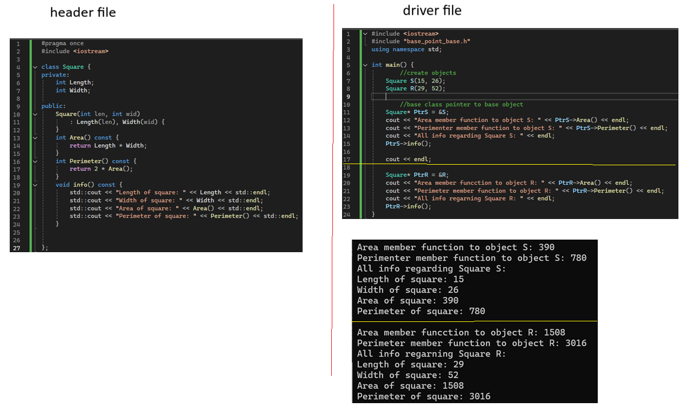
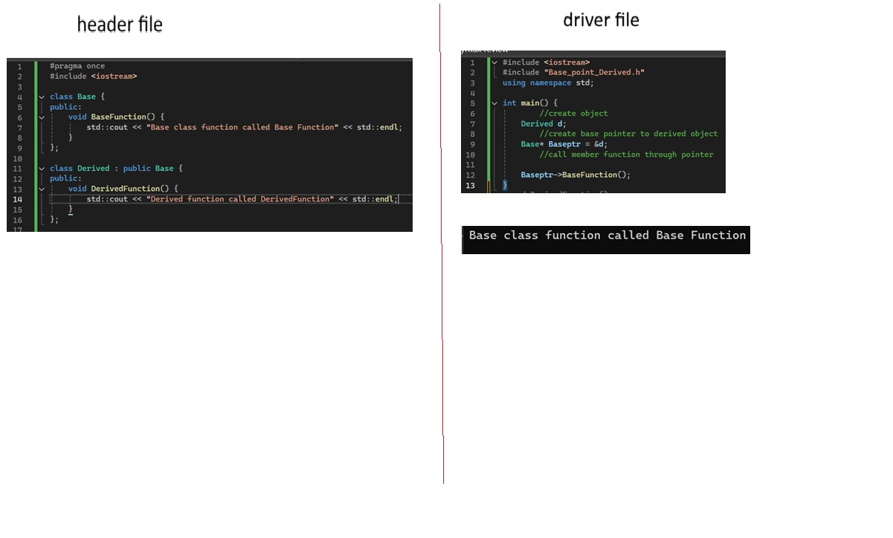

single inheritence

Multiple inheritance

Virtual public: Solution to the diamond problem

Polymorphism

base class pointer to base object

derived class pointer to derived object
format is similar to base class pointer to base object except with the base class instead
Base class pointer to derived class object
